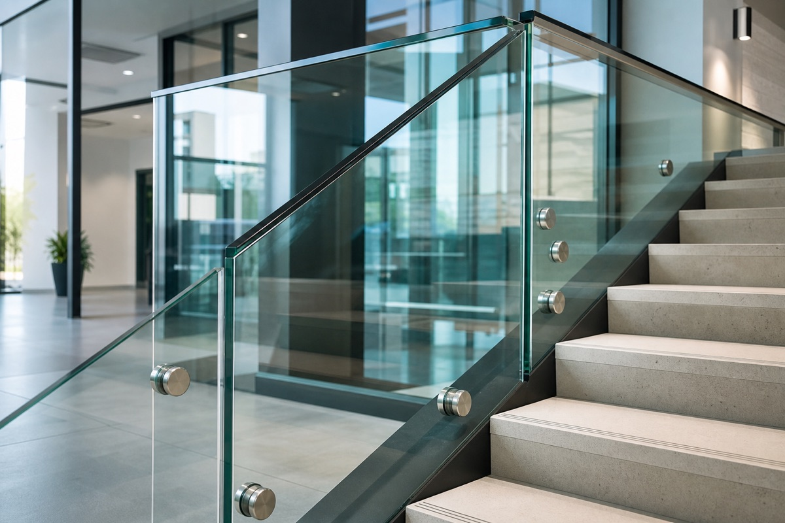

GlassStudio · Kondapur, Hyderabad
Toughened Glass in Kondapur
Cut-to-size toughened glass for doors, partitions, shower glass, railings and shop fronts in Kondapur, Kothaguda and Hafeezpet.
Toughened glass for Kondapur homes, offices and shops
Kondapur has grown into a dense mix of gated apartments, offices and retail along Botanical Garden Road and Kothaguda. Toughened glass is the safe choice for most glass work here: it is several times stronger than normal glass and, if it breaks, it breaks into small blunt pieces instead of sharp shards.
GlassStudio supplies and installs toughened glass in Kondapur. Because toughened glass cannot be cut or drilled after toughening, we measure on site first and finalise every size, hole and cut-out before the glass goes for toughening.
- 8mm, 10mm and 12mm toughened glass
- Clear, frosted, tinted and fluted
- Measured on site before toughening
- Supply only or supply with installation
Where toughened glass is used
- Glass doors for offices, shops and homes
- Glass partitions and office cabins
- Shower glass partitions and enclosures
- Balcony and staircase railings (toughened or laminated)
- Shop fronts for retail along Kondapur main roads
- Table tops, shelves and kitchen splashbacks
Choosing the right thickness
- 8mm: shower partitions, cabinet shutters, shelves
- 10mm: office partitions, interior doors
- 12mm: entrance doors, shop fronts, balcony railings and large panels
- We recommend the thickness for your size and use during site measurement
Localities we serve around Kondapur
Kondapur, Kothaguda, Botanical Garden Road, Hafeezpet, Masjid Banda, Raja Rajeshwara Nagar, Hitech City MMTS area and Gachibowli–Miyapur Road.
Frequently asked questions
Can toughened glass be cut after it is made?
No. Toughened glass must be cut and drilled before toughening, which is why we take exact site measurements first.
Do you supply toughened glass in Kondapur without installation?
Yes. We can supply cut-to-size toughened glass only, or supply and install it.
Book a site visit in Kondapur
Send rough sizes or site photos on WhatsApp for an estimate, or call +91 92664 72817.